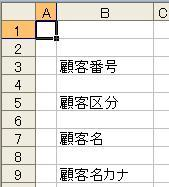

第4回.顧客登録のシートを作成(1)
さて、いよいよマクロの作成に入ります、
まずは、シート「顧客登録」を追加して下さい、
中身は何も必要ありません、
次に、「Visual Basic Editor」（VBEと略します、今後はVBEとだけ記述します）を起動して下さい。
起動方法は前回説明しました。
忘れた
もう一度説明しておきます。
2003なら、「ツール」→「マクロ」→「Visual Basic Editor」
2007以降、「開発」→「Visual Basic」
ショートカットはAlt+F11です。
VBEの画面が表示されたら、
左上の「プロジェクト」ウインドウのどこでも良いので、右クリック！
「挿入」→「標準モジュール」
「プロジェクト」に「標準モジュール」が追加され、その下に「Modure1」が作成されたはずです。
右側には、白い空白領域が表示されています、ここが、「Modure1」の内容を記述する領域です。
「コード」ウインドウです。
では、ここにコード(VBA)を書きます。
書く内容は、シート「顧客一覧」の見出し部より、内容を持ってきます。
「顧客一覧」は横に項目が並んでいますが、「顧客登録」は縦に項目を並べます。
さらに、、「顧客登録」は１行おきに項目を並べます。
はい、では書いた下さい・・・できましたか？
冗談です、以下がコードです。
Sub 顧客登録シート作成()
Dim r1 As Long, c1 As Long
'顧客一覧の見出しの行,列位置
Dim r2 As Long, c2 As Long '顧客登録の行,列位置
r1 = 3
'顧客一覧の3行目を指定
c1 = 2 '顧客一覧の2列目を指定
r2 = 3 '顧客登録の2行目を指定
c2 = 2
'顧客登録の2列目を指定
Worksheets("顧客登録").UsedRange.Clear
'顧客登録の使用セルを全てクリア
'顧客一覧の3行目を2列目から右に進み、空白セルになるまで繰り返す
Do Until
Worksheets("顧客一覧").Cells(r1, c1) =
""
'顧客一覧の見出しを顧客登録に設定
Worksheets("顧客登録").Cells(r2, c2) =
Worksheets("顧客一覧").Cells(r1, c1)
c1 = c1 + 1 '顧客一覧の列を右に
r2 = r2 +
2 '顧客登録の行を2つ下に
Loop
End Sub
前回説明しましたが、「'」以降はその行はコメントです。
一つ一つ説明します。
Dim r1 As Long
これは、変数の定義です、変数とは、データを一時的に保存しておく入れ物です。
この入れ物には、種類が色々あり、入れられる物が違ってきます。
身の回りで言えば、鍋、ザル、ダンボール等々だと考えて下さい。
水を入れるなら、上のなかなら、鍋しかないですよね。
つまり、入れるデータによって種類を決めます。
これをデータ型と言います。
そして、この変数定義は、「,」で区切ることで、１行に複数書くことが出来ます。
データ型一覧
Integer 整数型 2バイト -32,768 ～ 32,767
Long 長整数型
Single
単精度浮動小数点数型
Double 倍精度浮動小数点数型
Currency 通貨型
String 文字列型
Date
日付型
Object オブジェクト型
Boolean ブール型
Variant
バリアント型
それぞれ詳しい値の範囲等は省略します。
Integerの範囲だけ示したのは、現在のエクセルでは、行数には不足している事を理解して欲しいからです。
行数をいれるなら、Longが必要です。
これをいきなり全て覚えるのは無理でしょうから、
分からない時は、Variantを指定して下さい、これは何でも入れられる便利なものです。
r1 = 3
これは、r1という変数に3を入れることです。
r2を3に等しくすると考えればよいでしょう。
Worksheets("顧客登録").UsedRange.Clear
これは、むずかしいですね。
まず、Worksheets("顧客登録")は、シート「顧客登録」のことです。
これは、Sheets("顧客登録")でも同じです。
シートは、「ワークシート」や「グラフ」等があり、この種別のちがいであり、
Sheetsなら全てのシートを指定できます。
まあ、最初はどちらでも好みで良いと思います。
UsedRangeは、そのシートで使用したことのあるセル範囲を示します。
そして、その範囲を、Clearしています、全て消去されます、値も書式も消去されます。
また、範囲をシート全部にするなら、「.Cells.Clear」と指定します。
Do Until Worksheets("顧客一覧").Cells(r1, c1) = ""
Do Until 条件
・・・
LooP
で、条件を満たすまで、・・・を繰り返します。
Worksheets("顧客一覧").Cells(r1, c1) = ""になるまで、
つまり、空白セルになるまで以下の処理を繰り返すのです。
この場合の「=」は値の代入ではなく、等しいかの判定です。
Cells(行, 列)は、指定の行列の位置のセルを指します。
正しくは、Cells(行, 列).Valueなのですが、Valueは省略可能です。
Valueは値の入っているプロパティです。
さまりここでは、セルそのものではなく、Cells(r1, c1)のセルの値が空白かの判断をしています。
Cellsについては、もっと詳しく説明する必要がありますが、次回以降で。
別の書き方で、
Do While 条件
・・・
Loop
があります、これは、条件を満たしている間、処理を繰り返します。
Whileで、上記を書けば、
Do Until Worksheets("顧客一覧").Cells(r1, c1) <> ""となります。
「<>」は等しくないと言う意味です。
Worksheets("顧客登録").Cells(r2, c2) = Worksheets("顧客一覧").Cells(r1,
c1)
これは、値の代入です、省略しないで書くと、
Worksheets("顧客登録").Cells(r2, c2).Value = Worksheets("顧客一覧").Cells(r1, c1).Value
になります、このValueは、セルが持つプロパティで、値がはいっています。
このValueは省略できるのです。
つまり、シート「顧客一覧」の該当セルの値を、シート「顧客登録」の該当セルに入れています。
c1 = c1 + 1
これは値の代入です。
c1に1を足して、元のc1に入れています。
つまり、c1を1増やしています。
再度、全体を見て下さい、やりたい事が理解できるでしょうか？
では、このマクロを実行してみましょう。
エクセルに戻って、マクロを実行して下さい。
これも前回説明していますが、一応再度、
2003なら、「ツール」→「マクロ」→「マクロ」
2007以降、「開発」→「マクロ」
ショートカットは、Alt+F8です。
「顧客登録シート作成」を選択し、「実行」
シート「顧客登録」を見て下さい。

とりあえず、１行おきに、シート「顧客一覧」から見出しを持ってこれたはずです。
どうでしょうか、一瞬で作成されたはずです。
手作業でやったら、それなりの時間がかかります。
しかも、このマクロなら、シート「顧客一覧」に項目を追加・削除が自由に可能なのです。
これが、マクロの良さですね、大幅な時間短縮になります。
しかし、まだ名前だけですし、罫線も引かれていないし、
まだまだ、これからです。
つぎは、色を付け、罫線を引いてみます。
その前に、シート「顧客登録」で以下の作業をしておいて下さい。
１．4行目、6行目、8行目と4行目以降の偶数行の行高を狭くして下さい。
上の画像でもわかるとおもいますが、見やすくします。
使用する項目数を考え、適当なぎょうまでで良いでしょう。
当然マクロでできますが、一度っきりの作業で、かつ短時間の作業は、
マクロを作成する意味がありません。
２．C列以降の適当な列まで、そうですね、Z列位までで良いです、
列幅を狭くして下さい、「2.0」くらいでよいです。
理由は後でわかります。
では、マクロを直します。
Sub 顧客登録シート作成()
Dim r1 As Long, c1 As Long '顧客一覧の見出しの行,列位置
Dim r2
As Long, c2 As Long '顧客登録の行,列位置
Dim intW As Integer
'列数計算用
r1 = 3 '顧客一覧の3行目を指定
c1 = 2 '顧客一覧の2列目を指定
r2 =
3 '顧客登録の2行目を指定
c2 = 2 '顧客登録の2列目を指定
With Worksheets("顧客登録")
.UsedRange.Clear
'顧客登録の使用セルを全てクリア
'顧客一覧の3行目を2列目から右に進み、空白セルになるまで繰り返す
Do Until
Worksheets("顧客一覧").Cells(r1, c1) =
""
'顧客一覧の見出しを顧客登録にコピー
Worksheets("顧客一覧").Cells(r1,
c1).Copy .Cells(r2,
c2)
'顧客一覧の列幅が、顧客登録の列幅の何個分かを計算
intW =
Round(Worksheets("顧客一覧").Columns(c1).Width / .Columns(c2 + 1).Width,
0)
'上で計算した個数分のセルを結合する。
.range(.Cells(r2, c2 + 1), .Cells(r2,
c2 + 1 + intW)).MergeCells = True
'罫線を引く
.range(.Cells(r2,
c2), .Cells(r2, c2 + 1 + intW)).Borders.LineStyle =
xlContinuous
c1 = c1 + 1 '顧客一覧の列を右に
r2 = r2 + 2
'顧客登録の行を2つ下に
Loop
End With
End
Sub
まずは、これでしょう。
With Worksheets("顧客登録")
With オブシェクト
・・・
End With
これは、オプジェクトに対し、再定義を省略できるようにします。
つまり、「・・・」の部分では、このオブジェクトの記述を省略できます。
はっきり言って、初心者には直ぐには理解しずらいと思います。
本来なら、もっと後で説明するところなのですが、
ブログへのアップを考えると、記述を短くした方が良いので、あえて先に出しました。
理屈ぬきで、オブジェクトを省略出来ると思って下さい。
この場合は、
Worksheets("顧客登録").○○○は、.○○○だけで良いということです。
ただし、先頭の「.」は絶対に必要です、決して忘れないで下さい。
Worksheets("顧客一覧").Cells(r1, c1).Copy .Cells(r2, c2)
これは、セルのコピー&ペーストです。
マクロの記録だと、
Sheets("顧客一覧").Select
range("B3").Select
Selection.Copy
Sheets("顧客登録").Select
range("B3").Select
ActiveSheet.Paste
こんなふうになると思います。
しかし、これでは記述が長すぎるし、処理スピードも遅くなります。
上の命令では、「コピー元 コピー先」として１行で記述できています。
コピー先の.Cells(r2, c2)の先頭の「.」は、先のWithで省略された部分です。
つまり、Worksheets("顧客登録").Cells(r2, c2)と同じ事です。
セルをコピーしていますので、文字・書式の全てがコピーされています。
intW = Round(Worksheets("顧客一覧").Columns(c1).Width / .Columns(c2 +
1).Width, 0)
ちょっと、何が何だかわからなくなってきてしまいそうですが、
これは、「顧客一覧」の該当列の幅を「顧客登録」の列幅で割り算し、何列分に相当するかを計算しています。
正確な幅を再現する必要がないので、Roundで適当に処理しています。
Roundは四捨五入の関数です。第2引数で、四捨五入する桁位置を指定しています、ここでは整数です。
Columns(番号)は、指定の列番号の列全体をさします。
Widthは幅が入っているプロパティです。
.range(.Cells(r2, c2 + 1), .Cells(r2, c2 + 1 + intW)).MergeCells =
True
上で計算して、列数分をセル結合しています。
.MergeCells = Trueで指定の範囲のセルが結合されます。
.range(.Cells(r2, c2), .Cells(r2, c2 + 1 + intW)).Borders.LineStyle =
xlContinuous
Worksheets("顧客登録").range(.Cells(r2, c2), .Cells(r2, c2 + 1 + intW))のセルに対して、
上下左右に線をひいています。
xlContinuousは線種で、実線になります。
マクロの記録をしてみれば分かると思いますが、とんでもなく長い記述になります。
今回は簡単に実線を引く場合のやり方です。
罫線には色々種類や引き方があるので、必要になった時点で詳しく説明します。
では、マクロを実行して下さい、↓のようになったはずです。
しかし、まだまだこれからです。
とりあえず今回は、ここまで、続きは次回に。
理解出来ない部分があっても問題ないです。
やり進めるうちに、少しづつ理解できるようになります。
最初は、こう書けば、こう動くんだ、とそのままに理解しておく事も必要です。
今回の復讐
Dim、変数定義
データ型
Worksheets(名前)
UsedRange.Clear
Cells
Do Until
Do While
With
Columns
Round
セルのコピー
罫線を引く
同じテーマ「エクセル顧客管理」の記事
第1回.どんなソフトにするか
第2回.顧客一覧のシートを作成
第3回.顧客登録のシートを作成、その前にマクロって何？
第4回.顧客登録のシートを作成(1)
第5回.顧客登録のシートを作成(2)
第6回.ここまでの復習
第7回.本格的なプログラムへ
第8回.顧客一覧より顧客データを取得
第9回.イベントを使ってマクロを起動させる
第10回.コーディングとデバッグ
第11回.顧客登録より顧客一覧へ更新
新着記事NEW ・・・新着記事一覧を見る
VBA100本ノック 100本目：WEBから100本ノックのリストを取得｜VBA練習問題（3月3日）
VBA100本ノック 99本目：自動席替え（行列と前後左右が全て違うように）｜VBA練習問題（3月2日）
VBA100本ノック 98本目：席替えルールが守られているか確認｜VBA練習問題（3月1日）
VBA100本ノック 97本目：Accessデータを取得（グループ集計）｜VBA練習問題（2月27日）
VBA100本ノック 96本目：Accessデータを取得（マスタ結合&抽出）｜VBA練習問題（2月26日）
VBA100本ノック 95本目：図形のテキストを検索するフォーム作成｜VBA練習問題（2月24日）
VBA100本ノック 94本目：表範囲からHTMLのtableタグを作成｜VBA練習問題（2月23日）
VBA100本ノック 93本目：複数ブックを連結して再分割｜VBA練習問題（2月22日）
VBA100本ノック 92本目：セルの色を16進で返す関数｜VBA練習問題（2月20日）
VBA100本ノック 91本目：時間計算（残業時間の月間合計）｜VBA練習問題（2月19日）
アクセスランキング ・・・ ランキング一覧を見る
1.最終行の取得（End,Rows.Count）｜VBA入門
2.RangeとCellsの使い方｜VBA入門
3.変数宣言のDimとデータ型｜VBA入門
4.マクロって何？VBAって何？｜VBA入門
5.Range以外の指定方法（Cells,Rows,Columns）｜VBA入門
6.セルのコピー&値の貼り付け（PasteSpecial）｜VBA入門
7.繰り返し処理（For Next)｜VBA入門
8.セルに文字を入れるとは（Range,Value）｜VBA入門
9.マクロはどこに書くの（VBEの起動）｜VBA入門
10.とにかく書いてみよう（Sub,End Sub）｜VBA入門
このサイトがお役に立ちましたら「シェア」「Bookmark」をお願いいたします。
記述には細心の注意をしたつもりですが、
間違いやご指摘がありましたら、「お問い合わせ」からお知らせいただけると幸いです。
掲載のVBAコードは動作を保証するものではなく、あくまでVBA学習のサンプルとして掲載しています。
掲載のVBAコードは自己責任でご使用ください。万一データ破損等の損害が発生しても責任は負いません。